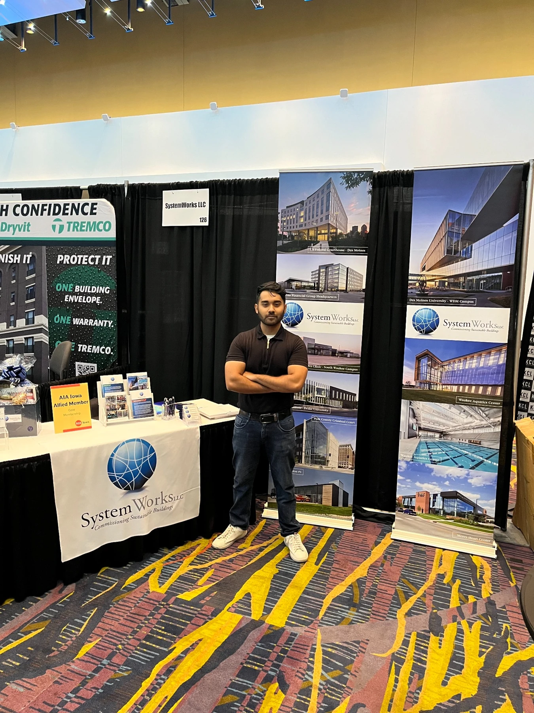

Design reviews
Reviewed mechanical drawings, specifications, and system design information to understand requirements and intended operation.

Mechanical design.
Systems thinking. Practical experience.
I study mechanical engineering at Iowa State University. My work spans CAD and physical prototypes, alongside design reviews, controls reviews, and functional test development at SystemWorks.
Mechanical Engineering Co-op & Intern
SystemWorksWest Des Moines, Iowa
At SystemWorks, I reviewed mechanical designs and controls, developed functional tests, and supported commissioning of HVAC and piping systems. The experience connected engineering documentation with how a building’s systems are intended to operate.
Reviewed mechanical drawings, specifications, and system design information to understand requirements and intended operation.
Reviewed BAS control sequences and equipment integration to understand how systems should respond and operate together.
Developed functional tests and supported performance testing to evaluate system operation against design intent.
Documented findings, tracked deficiencies and corrective actions, and coordinated with engineers, clients, and contractors.
Personal and team projects in mechanical design, power transmission, and lightweight structures.
Browse the complete project galleryA personal 1:10-scale vehicle project bringing custom printed parts together with a motor, servo, battery, bearings, and steering hardware. My focus is component fit, alignment, and assembly.
A geared flywheel assembly that turns mechanical input into electrical output. I contributed CAD design, mechanical fit-up, coil preparation, and soldered circuitry.
Contributing focused component and material decisions to a larger vehicle: lightweight structural applications and custom door-support brackets.
Measurement, data analysis, and technical communication at Iowa State University.
Atomic force microscopy imaging and force mapping. Quantified surface roughness through engineering measurements and experimental data analysis.
Sensor calibration, experimental setup, and measurement verification. Automated engineering reports with Python and VBA and organized workflows in monday.com.
Evaluate thermodynamic cycles and energy balances and provide technical feedback on students’ analytical work.
Assess mathematical accuracy and reasoning using consistent grading criteria.
Parts & assemblies · Engineering drawings
DFM/DFA · Material selection · 3D printing
Python · Excel analysis & charts
VBA · Experimental data analysis
Functional test development · BAS review
Sensor calibration · Deficiency tracking
Mechanical assembly · Soldering
Rapid prototyping · Fit checks
I’m Meraj, a mechanical engineering student at Iowa State University. I’m drawn to design work that ends with something I can assemble, test, and improve.
My experience spans custom prototypes, student vehicle design, laboratory measurements, and building-system commissioning. I enjoy working through the practical details: how a part fits, how a system behaves, and how to explain what I found.
Cars, regular maintenance, and a growing interest in how parts are made.
I love cars and enjoy regular maintenance on my own vehicle. Looking closely at the engine bay and its components keeps my interest in mechanical systems hands-on.
Early hands-on experience with welding and casting complements my CAD, soldering, and additive-manufacturing work. I’m continuing to build familiarity with fabrication processes and how they shape design decisions.
I’m interested in mechanical design, manufacturing, testing, and building systems. I’d welcome a conversation about an internship, co-op, or future engineering role.